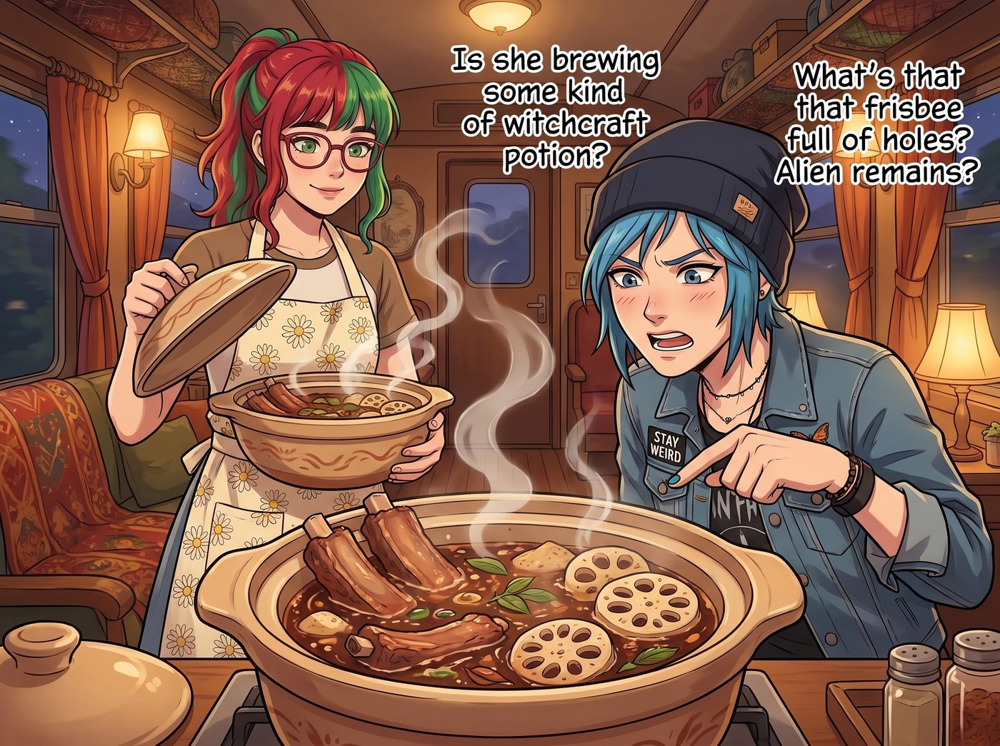
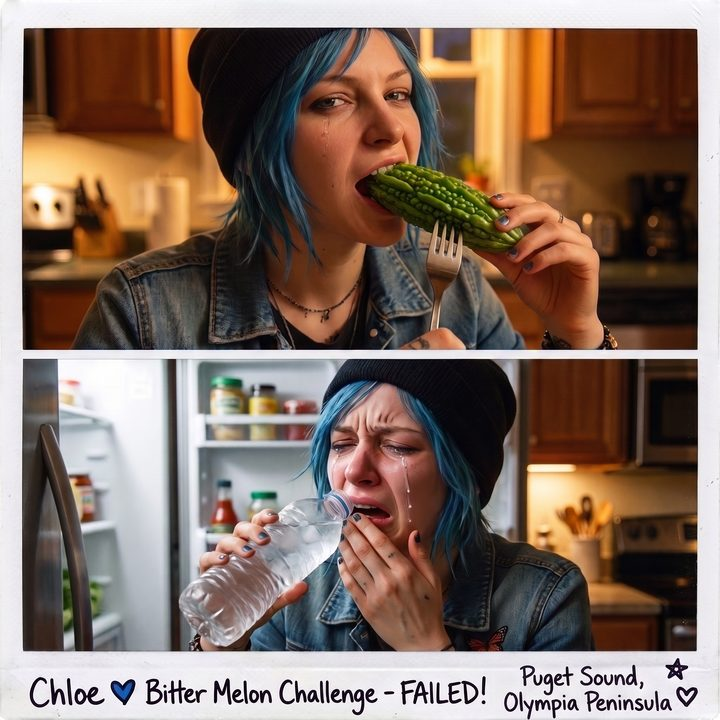
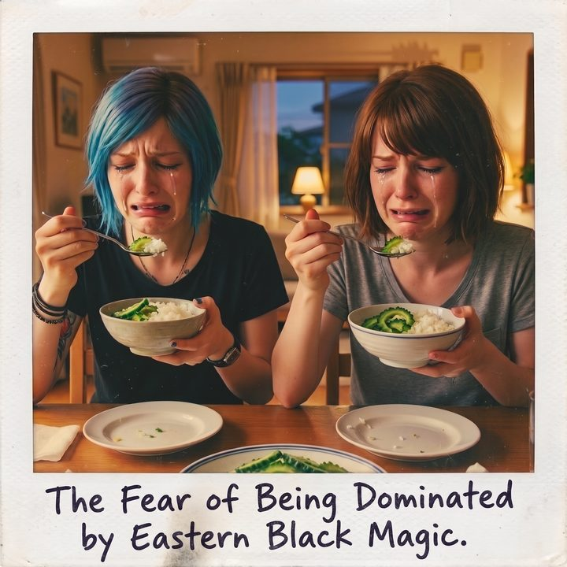

東方食療打擊



雖然在美國大眾的認知裡，中餐通常等於甜膩的左宗棠雞和幸運餅乾，但在西雅圖的國際區，只要找對了那種連招牌都褪色的老字號粵菜館，你完全能接觸到最硬核的東方飲食靈魂。
隨著西雅圖進入陰冷潮濕的秋冬雨季，二號車廂的健康合規總監 Lily 決定對這群天天吃垃圾食物的學姐們，實施一次跨文化物理食療打擊。
一、東方神秘液體
某個週五的傍晚，Lily 抱著一個巨大的陶瓷砂鍋走進了起居廂。剛一掀開蓋子，一股混合著肉香與淡淡中藥材甜味的醇厚熱氣，瞬間瀰漫了整個車廂。
「這是在熬什麼巫術魔藥嗎？」Chloe 警惕地湊過來，看著砂鍋裡翻滾著的排骨、幾塊長滿孔洞的奇怪植物。「那個長滿洞的飛盤是什麼？外星人的遺骸嗎？」
「這是廣東老火靚湯，Price 學姐。具體來說，是蓮藕淮山豬骨湯，慢火熬製了六個小時。」Lily 溫柔地盛出四碗，清澈微黃的湯汁在燈光下散發著迷人的色澤，「它可以健脾潤肺，對於您這種長期熬夜修車的高耗損型體質，具有極強的修復作用。」
Victoria 穿著真絲睡衣，雙臂交叉，名媛的臉上寫滿了抗拒：「我只喝經過三次過濾的法式清湯。這種把一堆不知名的根莖類植物和帶骨頭的肉丟在一起亂燉的液體，看起來充滿了粗糙感。」
「Victoria，試試看嘛。」Kate 已經雙手捧著瓷碗，輕輕喝了一口，發出一聲極度舒適的嘆息，「哇……好溫暖，感覺五臟六腑都被一雙溫柔的手擁抱了。」
在 Kate 的帶動下，Victoria 勉為其難地端起碗，用銀湯匙抿了一小口。一秒鐘後，名媛的動作停住了。
那股極度醇厚、清甜、將肉類的鮮美與植物的精華完美融合的複雜層次感，讓她那被精緻料理慣壞的味蕾瞬間舉白旗投降。
「這……這不可能……沒有加奶油，沒有用松露提味，為什麼會有這麼深邃的鮮味？這需要極其嚴苛的火候控制和時間成本！」
「這叫時間的魔法，學姐。」Lily 乖巧地笑了笑，看著已經一言不發、端起碗狂喝的 Chloe，「看來 Price 學姐的身體，比她的嘴巴誠實多了呢。」
二、苦瓜地獄
就在大家都沉浸在老火湯的治癒中時，Lily 端上了今晚的主菜。其中一盤是黃綠相間的炒菜——苦瓜炒蛋。
在美國，苦瓜（Bitter Melon）雖然不常見於主流超市，但在亞洲超市絕對是常客。它那佈滿顆粒的翠綠外表，對於從未接觸過它的美國人來說，極具欺騙性。
「哦？炒櫛瓜（Zucchini）加雞蛋？或者是某種變種的青椒？」 Max 剛修完圖，餓得飢腸轆轆。她完全沒有防備，直接用叉子叉起一大塊翠綠的苦瓜，毫不猶豫地塞進了嘴裡，用力一咬。
「咔嚓。」
那是一種怎樣的味道？ 那是將一萬片壓碎的阿斯匹林、三杯濃縮的黑咖啡，以及某種植物在面臨死亡時分泌的毒素，混合在一起的極致苦澀。這種苦味沒有任何緩衝，直接如同閃電般擊穿了 Max 的味蕾，直衝天靈蓋。
Max 的動作瞬間定格。
她那原本清秀的臉龐，在零點一秒內發生了劇烈的地質運動。她的眉毛緊緊扭打在一起，兩隻眼睛擠成了兩條縫，鼻子皺成了一團，嘴巴更是因為極度的苦澀而縮成了一個痛苦的「菊花狀」。 整個五官彷彿被臉部中心的一個微型黑洞給吸了進去，扭曲得連親媽都認不出來。
「呸呸呸——！！」 Max 終於反應過來，一把扯過紙巾吐了出來，眼淚都飆出來了。她驚恐地看著那盤菜，手指甚至下意識地舉到了半空中，試圖發動超能力：「這他媽是什麼毒藥？！我能倒轉時間回到五秒鐘前阻止自己嗎？！哪怕流鼻血我也願意！」
Chloe 看著 Max 那彷彿戴了痛苦面具的扭曲表情，爆發出一陣震天動地的狂笑：「哈哈哈哈哈！Maxine，妳的臉剛才看起來就像一隻便秘的哈巴狗！有那麼誇張嗎？讓我來嚐嚐……」
Chloe 囂張地叉起一塊苦瓜塞進嘴裡。 三秒鐘後。 「嘔——！！水！水！老娘的舌頭要融化了！」藍領猛獸連滾帶爬地衝向冰箱，抓起一瓶冰水瘋狂灌進嘴裡，眼角掛著屈辱的淚水。
三、行政級別的降火威懾
「這叫苦瓜，學姐們。」Lily 站在餐桌旁，推了推圓框眼鏡，「根據中醫學理論和現代營養學的交叉比對，苦瓜富含維生素 C，具有極強的清熱解毒功效。鑑於您們的身體狀況，這盤苦瓜，已經被列入了工坊的健康合規強制執行清單。」
「我拒絕！」Chloe 和 Max 幾乎異口同聲地抗議。
「抗議無效哦。」坐在主位的 Kate 已經笑瞇瞇地開口了，「如果妳們今天不把這盤苦瓜吃完，明天的早餐就只有無糖燕麥片，並且接下來一個月，工坊的採購清單裡將不再出現任何汽水和洋芋片。」
五分鐘後，二號車廂裡出現了一幅極其悲壯的畫面。Chloe 和 Max 並排坐在餐桌前，一邊流著眼淚，一邊將苦瓜和白飯拌在一起，用一種視死如歸的表情嚥下去。
Victoria 坐在對面，一邊優雅地喝著老火湯，一邊拿出手機，對著兩人扭曲的表情連拍了十幾張照片。
「把照片發給我，Victoria。」Max 咬牙切齒地嚼著苦瓜，「我要把它們印在明年的畫廊年曆上，標題就叫《被東方黑魔法支配的恐懼》。」